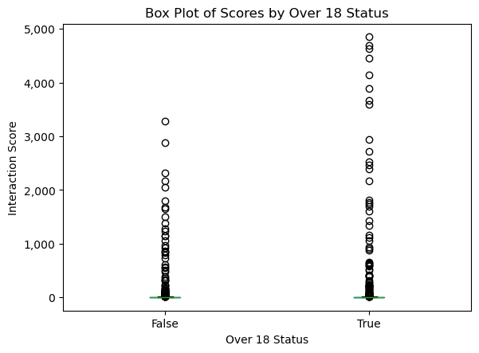

EDA
Executive Summary
This section describes our data processing, cleaning, and exploration work for our 2022 storytelling-focused subreddit data subset. The selected data encompasses comments and submissions from 12 popular subreddits, including r/AITA, r/AskMen, r/AskWomen, and others. We process this data using PySpark and AWS SageMaker. Beyond the data retrieval procedure from the class AWS bucket using Spark jobs, the cleaning process involves selecting columns useful for the analysis and removing entries with empty or deleted content.
Our analysis includes several critical aspects relevant to addressing our business goals. Firstly, we explore the data, including the distribution of posts across subreddits and the ratio of valid to invalid posts. We use Regex for preliminary sentiment analysis and add external data sources, like classic literature text, to expand the research potential of our data. These methods allow us to examine various aspects, such as the impact of NSFW content on engagement, the relationship between comments and scores, and the times of day when posts receive the most attention. We also begin the exploratory work for our ML goals, including subreddit community prediction and flair prediction in r/AITA.
Analysis Report
The Data Subset
We selected a subset of the data related to subreddits dedicated to storytelling during 2022. Namely, we chose the 12 subreddits r/AITA, r/AskMen, r/AskWomen, r/TrueOffMyChest, r/unpopularopinion, r/tifu, r/socialskills, r/antiwork, r/relationship_advice, r/explainlikeimfive, r/OutOfTheLoop, and r/NoStupidQuestions.
Using PySpark, we processed the .parquet files provided for the project in the s3://bigdatateaching/reddit-parquet/ bucket by subseting it only to the subreddits of interest. We read the comments and submissions data, filtered them based on the subreddits list, and wrote the results to our own group S3 directory we created for the project. We ran this procedure as a PySparkProcessor job using Amazon SageMaker. We used 8 ml.m5.xlarge instances. The code for this procedure is available here. The data we acquired has a shape of 3,444,283 x 68 for the submissions table and 76,503,363 x 21 for the comments table.
Cleaning and Checks
Our cleaning process includes removing from both datasets the columns that are not needed for each particular set of analyses. Also, in the comments table, we remove the rows where the body has been either removed, deleted, or is empty. In the submissions table, we also remove where the selftext has been removed, deleted, or is empty. The resulting rows are 977,181 for the submissions table and 70,594,314 for the comments table. We also performed data checks after these steps to ensure no missing values were in the processed dataset. Beyond this initial cleaning, every analysis required its own cleaning, which we detailed in each corresponding section.
The count of posts per subreddit in the resulting initial submissions dataset is detailed in Table 1:
| Subreddit | Count |
|---|---|
| relationship_advice | 311,882 |
| NoStupidQuestions | 234,253 |
| TrueOffMyChest | 125,159 |
| AmItheAsshole | 115,659 |
| antiwork | 76,647 |
| unpopularopinion | 39,642 |
| socialskills | 23,005 |
| AskMen | 18,240 |
| explainlikeimfive | 15,002 |
| tifu | 11,921 |
| OutOfTheLoop | 3,054 |
| AskWomen | 2,717 |
Another component of the data that we’d like to observe is how many submissions and comments we can actually extract textual information from. Below, we can see the distribution of “valid” versus “invalid” posts for each subreddit, with “invalid” posts being those that have been removed or deleted. It seems very common that posts are removed or deleted. Figure 1 shows the count of valid comments per Subreddit:
The code used for this section is available here.
Data transformations and additional variables
Although our new variables are described throughout this EDA section, we provide a brief summary below.
engagements: the sum of submissions and comments for a particular subreddit.interaction_score: an equal-weighted average of the number of comments and the score in each post.week_of_the_year: created from thecreated_utccolumn, it describes the week of the year corresponding to the particular post’s date.hour_of_the_day: created from thecreated_utccolumn, it describes the hour of the day corresponding to the particular post’s date.
Regex Search and Dummies
To gauge the overall engagement in the posts, we used Regex to create dummy variables that indicate whether the words ‘fascinating,’ ‘entertaining,’ and ‘boring’ appear on a post. We then aggregated them, with the results shown in Table 2:
| count | fascinating | entertaining | boring |
|---|---|---|---|
| 1 | 51,424 | 30,870 | 99,068 |
| 0 | 76,451,939 | 76,472,493 | 76,404,295 |
The code used for this section is available here.
External Data
We have two primary sources of external data. The first is a community members dataset detailing the number of members each of the 12 subreddits has. By combining this data into the submissions table, we will get a valuable extra data point for our analysis related to the engagement of posts. This data was collected from Reddit itself. Our second source is the text of the books Metamorphosis by Franz Kafka and The Scarlet Letter by Nathaniel Hawthorne. We aim to perform an NLP time-series sentiment analysis on these books and the most engaging long-form story posts, and by calculating the correlations, we’ll be able to determine if these take the reader through a similar sentiment pattern and infer whether that is the reason for their popularity. This data was collected from Project Gutenberg. These data sources are available at here.
The relationship between the number of comments and the score of Reddit posts
The number of comments (num_comments) and the score of a post (score), which is the upvotes minus the downvotes the post has received, are ways to gauge engagement with the post. Determining whether these variables are correlated can justify their combination into an aggregate engagement metric. To do this, we group the submissions by subreddit and leverage the corr function from pyspark.sql.functions. Table 3 shows the results:
| Subreddit | Correlation Coefficient |
|---|---|
| explainlikeimfive | 0.88 |
| OutOfTheLoop | 0.86 |
| AskMen | 0.85 |
| unpopularopinion | 0.83 |
| antiwork | 0.82 |
| tifu | 0.82 |
| AmItheAsshole | 0.81 |
| TrueOffMyChest | 0.79 |
| NoStupidQuestions | 0.78 |
| AskWomen | 0.77 |
| socialskills | 0.72 |
| relationship_advice | 0.64 |
We can also visualize them separately as in Figure 2:
We can see in both the table and figure that they are significantly correlated, which leads to the creation of the interaction_score additional variable. This metric is an equal-weighted average of the number of comments and the score in each post.
The code used for this section is available here.
The impact of not-safe-for-work (NSFW) content on user engagement.
To determine if not safe for work post affects user interactions, first, we filter the submissions dataset for where the over_18 flag is true (which in this tiny percentage of them). Then, we randomly sample an equal amount of false cases, and with this, we create a small, balanced dataset with the same amount of posts flagged as NSFW as those that are not.
We can create a boxplot with this small dataset to see the distribution. Since we know from Topic 1 that the interaction_score is a good gauge of overall interaction, we can plot that variable as shown in Figure 3:

over_18 statusWe can infer from the plot that NSFW content increases engagement with the post, although more analysis will be conducted in subsequent sections.
The code used for this section is available here.
The times of the day when posts typically receive the most engagement.
To determine the times of day when a post typically receives the most engagement, we create two additional variables: week_of_the_year and hour_of_the_day, both coming from the created_utc column. We remove the first two days of 2022 as these would be considered part of week 53 of 2021. Then, we can group and pivot the count of our new variables, resulting in the Figure 4:
This analysis clearly shows from roughly 6:00 AM to 11:00 AM UTC (or 1:00 AM to 6:00 AM Eastern time), there is low activity in the story time subreddits.
The code used for this section is available here.
Subreddit community prediction
One interesting task that we have our sights set on is predicting the subreddit to which a post belongs, given the textual components of the post. In doing so, there are many components of the data that we would like to explore. For this, we also generated an additional variable, engagements, as the sum of submissions and comments for a particular subreddit.
One component of the data we’d like to look at is the distribution of subreddits among submissions and comments. In Figure 5, we can see this distribution, with many engagements coming from the AmItheA\*hole, relationship_advice, and antiwork subreddits. These subreddits invoke much engagement from other users in the form of comments, so this level of engagement can be expected.
Click on the bars of each Subreddit to focus them!
The code used for this section is available here.
Flair prediction
In this section, we take a closer look at the subreddit r/AmItheA*hole (henceforth referred to as r/AITA) with the goal of both analyzing and predicting what “flair” is assigned to each post based on its text content. The exploratory segment of this analysis involves analyzing and visualizing the frequency counts of each “flair” in r/AITA for 2022.
In r/AITA, users post stories about situations in the real world where they have performed some action or behaved in some particular manner but are questioning whether their actions are good/bad, in a sense. Other users on the subreddit then comment on these story-like submissions and state whether they think the way the original poster acted was good or bad. Thus, each post is assigned a “flair” (i.e., tag) denoting the “judgment” of the post and can be any one of the following: A*hole, Not the A-hole, Everyone Sucks, and Not the A-hole. The first flair indicates the original poster acted in a reprehensible/poor manner, the second is the opposite, the third flair denotes a situation in which all parties are at fault, and the final flair indicates that no one acted in a particularly poor manner.
The number of posts that are flaired as each of the flairs in r/AITA is shown in Figure 6:
Figure 7 shows the relative proportion of them:
As we can see, Redditors, by and large, “judge” the majority of original posters as “Not the A-hole,” but there are plenty of posts where the judgments resulted in different outcomes. The frequency of these flairs’ occurrences and the possible reasons behind these occurrences, will be explored further in the NLP and ML sections.
The code used for this section is available here.
NLP EDA for Emerging Trends and Controversial Comments
In this section, we want to see whether popular topics that we’ve chosen are talked about and to take that a step further, the narratives that we have chosen from popular topics are broken down in each subreddit. Figure 8 below paints a clear picture of which subreddits have engagement related to the stories we are interested in exploring and shows the degree of engagement with comparisons to other subreddits and topics.

Another element of this exploration of stories that we wanted to understand was the impact the“controversiality” would have on other engagement metrics in the dataset. Below we look at the “scores”, “gildings”, and whether a comment was “stickied” for both controversial (1) and non-controversial (0) comments. From Figure 9, we can clearly see that the “controversial” metric does not have a positive impact on any of the engagement metrics that were identified in our exploratory data analysis.